SpringBoot前后端分离Token验证
过程图
- 登录

- 访问

- 退出

后端Token相关
参考 【Token】01.令牌的生成与存储_哔哩哔哩_bilibili
代码
Maven依赖
1
2
3
4
5<dependency>
<groupId>org.springframework.boot</groupId>
<artifactId>spring-boot-starter-data-redis</artifactId>
<version>2.6.2</version>
</dependency>application.properties配置
1
2
3
4
5
6
7
8
9#redis
##指定使用redis数据库索引(默认为0)
spring.redis.database=0
##指定Redis服务器地址
spring.redis.host=127.0.0.1
##指定Redis端口号
spring.redis.port=6379
##指定Redis密码 （没有可以不写）
#spring.redis.password=123456后端Token上传
1
2
3
4
5
6
7
8
9
10
11
12
13
14
15
16
17
18
19
20
21
22
23
24
25
26
27
28
29
30
31
32
private RedisTemplate<String, Object> redisTemplate;
public String LoginToken( String acctName, String acctPass) {
Map<String, Object> map_res = new HashMap<String, Object>();
UserBean userBean = null;
System.out.println("+++++地址栏获取：+++++");
System.out.println("用户名：" + acctName);
System.out.println("密码：" + acctPass);
System.out.println("++++++++++++++++++++");
//与数据库确认用户信息
userBean = loginService.findUser(acctName, acctPass);
if (userBean != null) {
int userId = userBean.getUser_id();
//生成token令牌
String token = String.valueOf(UUID.randomUUID());
System.out.println(token);
//存到redis数据库 token 用户名 有效时间
redisTemplate.opsForValue().set(token, JSON.toJSONString(userBean), Duration.ofHours(1));
System.out.println("登录成功");
map_res.put("msg", "成功");
map_res.put("code", "200");
map_res.put("uid",userId);
map_res.put("token",token);
}else{
map_res.put("msg", "失败");
map_res.put("code", "500");
}
return JSON.toJSONString(map_res);
}后端Token验证
1
2
3
4
5
6
7
8
9
10
11
12
13
14
15
16
17
18
19
20
public String getUserOfLogin(HttpServletRequest request) throws UnsupportedEncodingException {
Map<String, Object> map_res = new HashMap<>();
//获取Headers中的参数
String token = request.getHeader("token");
//从Redis中获取信息
Object user = redisTemplate.opsForValue().get(token);
System.out.println(user);
if (user != null) {
System.out.println("用户已登录");
map_res.put("msg", "用户已登录");
map_res.put("code", "200");
} else {
System.out.println("登录已过期");
map_res.put("msg", "登录已过期");
map_res.put("code", "500");
}
return JSON.toJSONString(map_res);
}后端Token删除
1
2
3
4
5
6
7
8
9
10
11
12
13
14
15
16
17
18
19
public String logout(HttpServletRequest request){
Map<String, Object> map_res = new HashMap<>();
String token = request.getHeader("token");
try {
//删除Redis中的token
Boolean delete = redisTemplate.delete(token);
System.out.println("登录已注销");
map_res.put("msg", "登录已注销");
map_res.put("code", "200");
} catch (Exception exception) {
exception.printStackTrace();
System.out.println("注销失败");
map_res.put("msg", "注销失败");
map_res.put("code", "500");
}
return JSON.toJSONString(map_res);
}
演示
登录


验证

退出


后端拦截器
参考 【狂神说Java】SpringBoot开发简单的网站_哔哩哔哩_bilibili
代码
新建
config文件夹拦截器
1
2
3
4
5
6
7
8
9
10
11
12
13
14
15
16
17
18
19
20
21
22
23
24
25
26
27
28public class LoginHandlerInterceptor implements HandlerInterceptor {
private RedisTemplate<String, Object> redisTemplate;
public boolean preHandle(HttpServletRequest request,
HttpServletResponse response,
Object handler) throws Exception {
Map<String, Object> map_res = new HashMap<>();
//获取Headers中的参数
String token = request.getHeader("token");
System.out.println("token: " + token);
//在redis中用token检索信息
Object user = redisTemplate.opsForValue().get(token);
System.out.println("user: " + user);
if (user != null) {
System.out.println("用户已登录200");
map_res.put("msg", "用户已登录");
map_res.put("code", "200");
return true;
} else {
System.out.println("登录已过期500");
map_res.put("msg", "登录已过期");
map_res.put("code", "500");
return false;
}
}
}MVC配置
1
2
3
4
5
6
7
8
public class MyMvcConfig implements WebMvcConfigurer {
//自定义拦截器 拦截所有 但是排除excludePathPatterns
public void addInterceptors(InterceptorRegistry registry) {
registry.addInterceptor(new LoginHandlerInterceptor()).addPathPatterns("/**").excludePathPatterns("/fvcs/LoginToken");
}
}
演示
登录
由于我们在自定义的拦截器里排除了登录接口 所以仍然可以登录

携带Token访问

发现Bug
我们查看日志 发现获取到了token值 Redis中也存在相关信息 但是获取不到数据
获取到了token 
获取不到redis的信息

在网上搜索后发现解决办法 拦截器中使用redisTemplate获取数据报空指针
自定义一个工具类，让它在注入容器时就生效，在拦截器中只需要使用该工具类即可
1 | //如果不使用这个注入 拦截器获取不到redis的值 |
同时修改拦截器
修改
1 | Object user = redisTemplate.opsForValue().get(token); |
为
1 | Object user = RedisUtils.redis.opsForValue().get(token); |
因为使用了自定义工具类所以可以删除
1 |
|
修复Bug后再次演示
携带Token访问
可以下载到图片

携带错误Token访问
下载不到图片 后端提示
登录已过期

不携带Token访问
下载不到图片 网页提示
500后端报错

网页访问
下载不到图片 网页提示
500后端报错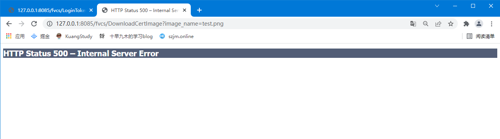
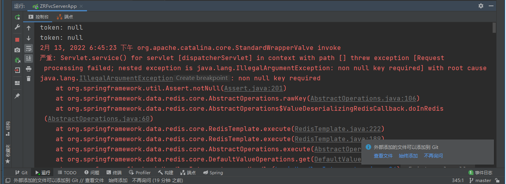
因为浏览器的请求头里没有携带Token值
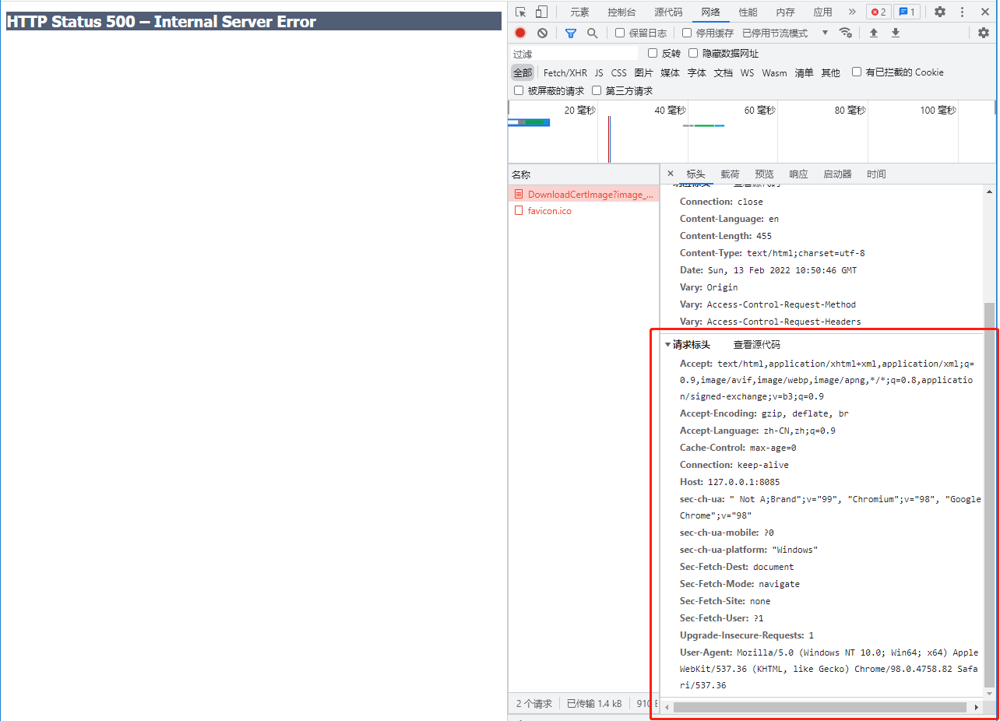
前端拦截器
因为我们拦截了所有请求 所以对每一个请求添加token值不太现实 所以我们需要用到vue的拦截器
参考 拦截器 | Axios 中文文档 | Axios 中文网 (axios-http.cn)
Vue:全局拦截所有请求，并在请求头中添加token_yuanchangliang的博客-CSDN博客_vue怎么将token添加到请求头
存储token
现在我们的浏览器会话存储没有存储token值
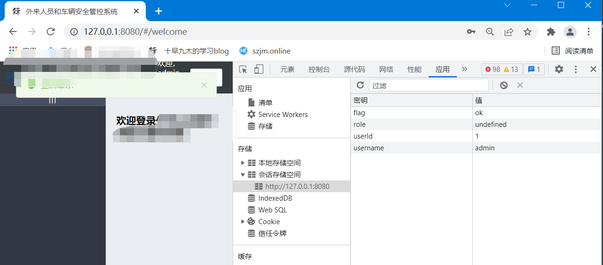
修改登录代码
在登录方法里的登录成功后增加
1 | window.sessionStorage.setItem('token', res.token);/*session放置，存储*/ |
再次登录发现存储里新增了token
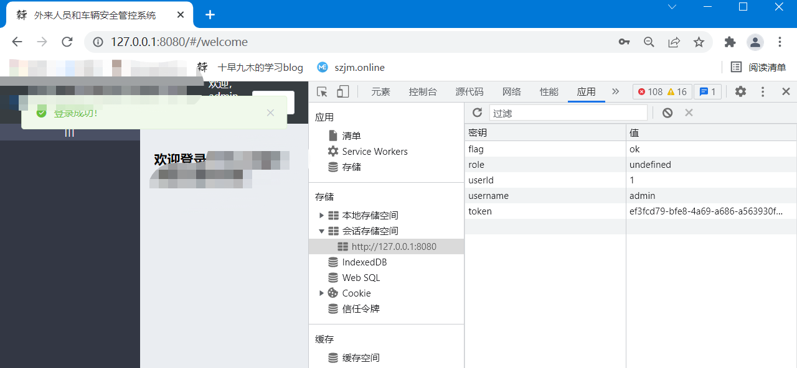
全局拦截
在main.js中新增语句
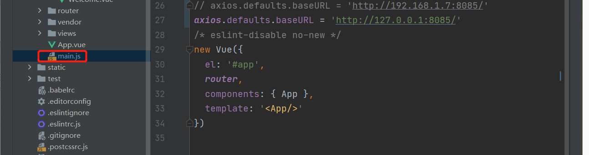
1 | // 添加请求拦截器 |
浏览器控制台输出了测试语句 说明拦截器生效
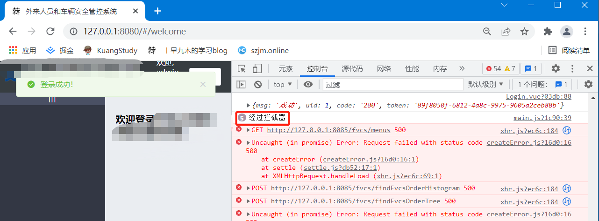
在请求头添加token信息
1 | // 添加请求拦截器 |
再次测试 可以访问其他接口 请求头有token 后端正常
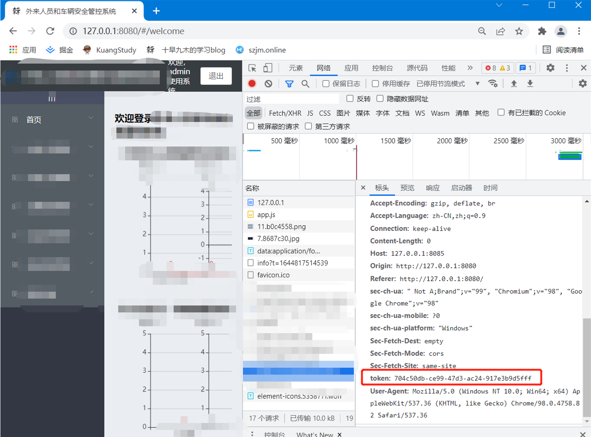
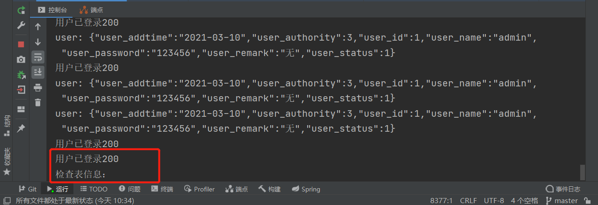
发现Bug
在测试的时候尝试了一下手动F5刷新，然后所有的访问就都被拒了，检查日志后发现时拦截器不生效了导致请求没有携带请求头
上网一番查找发现解决办法(Vue 刷新页面后 axios请求拦截器不起作用的解决办法_atrainee的博客-CSDN博客_axios拦截器不起作用
新建
http.js1
2
3
4
5
6
7
8
9
10
11
12
13
14
15import axios from 'axios'
// 添加请求拦截器
axios.interceptors.request.use(function (config) {
// 在发送请求之前做些什么
//写个输出测试一下
console.log("经过拦截器");
// 请求头添加token
config.headers.common['token'] = sessionStorage.getItem('token')
console.log(sessionStorage.getItem('token'));
return config;
}, function (error) {
// 对请求错误做些什么
return Promise.reject(error);
});修改
main.js删除
1
2
3
4
5
6
7
8
9
10
11
12
13// 添加请求拦截器
axios.interceptors.request.use(function (config) {
// 在发送请求之前做些什么
//写个输出测试一下
console.log("经过拦截器");
// 请求头添加token
config.headers.common['token'] = sessionStorage.getItem('token')
console.log(sessionStorage.getItem('token'));
return config;
}, function (error) {
// 对请求错误做些什么
return Promise.reject(error);
});添加
1
2
3import instance from './http'
Vue.prototype.$axios = instance修复Bug后再次测试
发现刷新后token请求头仍然存在 bug修复成功
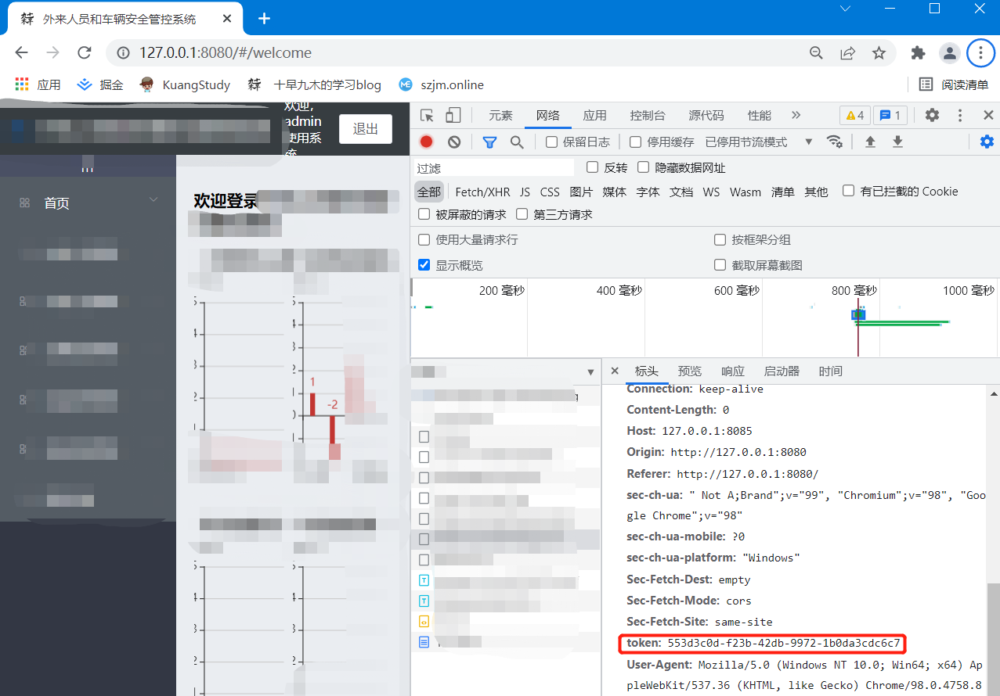
后期优化
token时间重置
我们在一开始用户登录的时候为用户分配了能使用一个小时的token，如果用户一个小时内一直在使用，但是一个小时零1秒过去后你还是强制把用户退出了显然不合适
在后端过滤器增加代码，用户每次访问其它接口都会重置token的生效时间，只要用户一直在访问，token就不会过期
修改LoginHandlerInterceptor 在token生效的if中增加
1 | //重置token时间 为30分钟 |
退出时清除用户数据
1 | methods: { |
测试发现redis中的信息没有被删除 浏览器显示在调用loginout接口时token为空
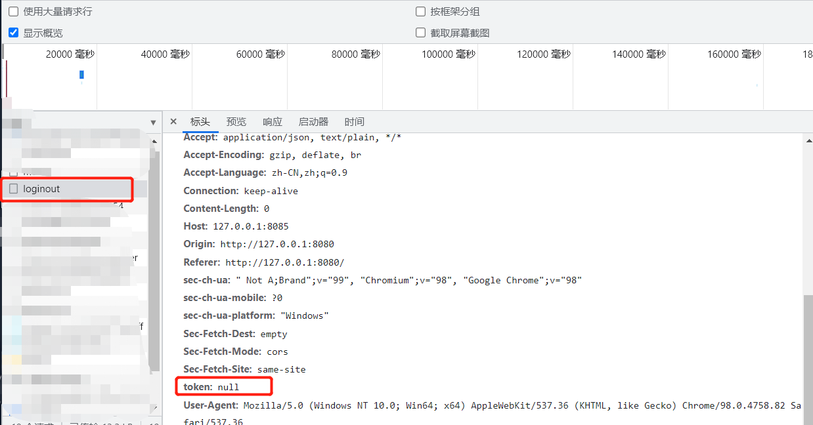
发现bug
在前端退出接口输入res发现token值为空的情况下显示删除成功了
修复bug
1 |
|
至于没有获取到token值的问题
猜测是因为window.sessionStorage.clear();删除会话后才调用的接口
修改代码 使用async和await异步线程 redis删除完毕后再继续清除会话存储
1 | async logout() { |
再次测试 成功 能成功删除token值 使用postman测试也无法使用此token
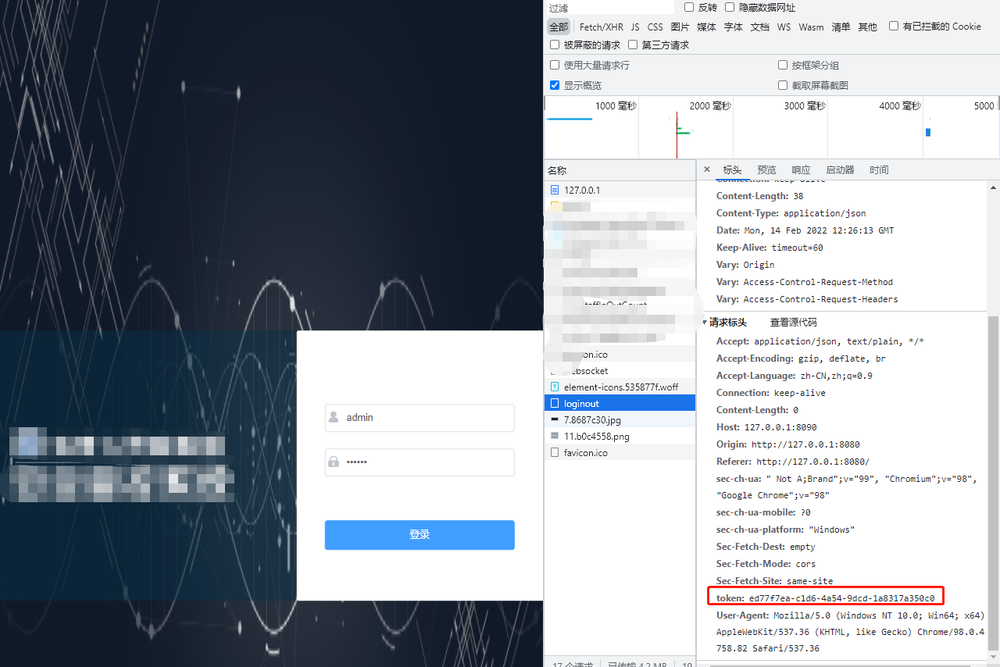
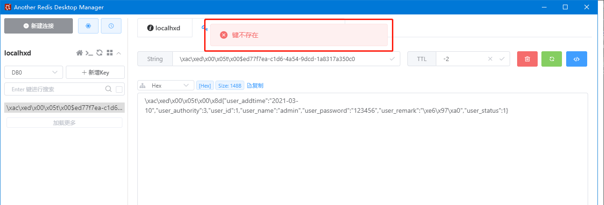
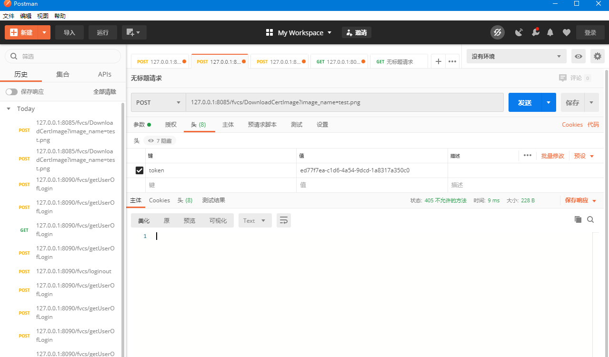
优化过滤器
实际应用中,登录接口,验证接口,退出接口都不需要经过过滤器接受token验证 所以我们把这些不需要经过过滤器的 与登录相关的接口放在/user/接口注解下
Controller接口层
在class外面新增接口注解
1 |
|
MyMvcConfig配置
修改拦截
1 | registry.addInterceptor(new LoginHandlerInterceptor()).addPathPatterns("/**").excludePathPatterns("/user/**"); |
只要是/user/下的请求都不用经过拦截器
Token失效跳转
在没有获取到token或者没有获取到正确token时，浏览器端会直接跳转到登录界面，很突兀
我们需要一个提示跳转界面做缓冲，类似北京时间 (btime.com) 现在好多网站404界面不做自动跳转了，而是用来放广告
新建unlogin.html
参考 JavaScript>倒计时自动跳转到首页(指定网页)_越努力，越幸福！-CSDN博客
1 |
|
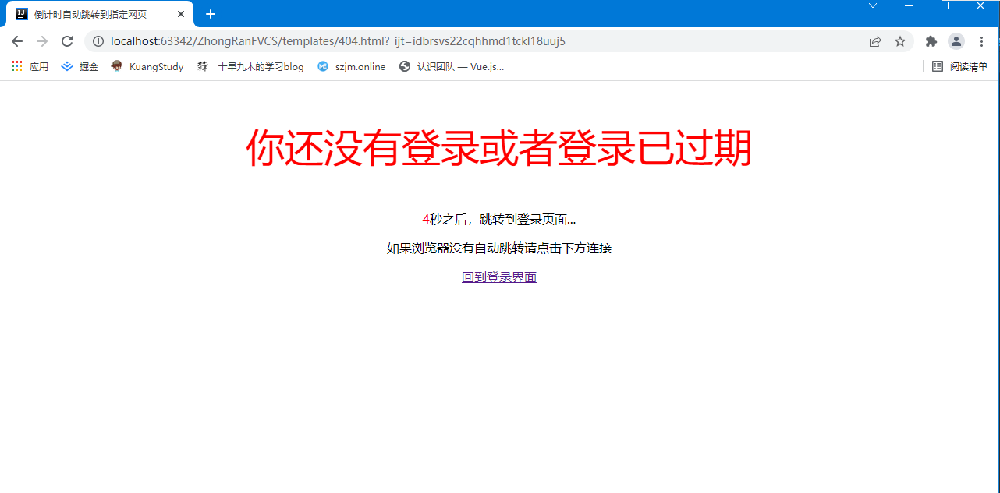
修改拦截器
修改MVC配置
为未登录跳转的html界面设置地址使其可以被访问
修改拦截器
01